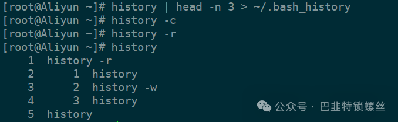
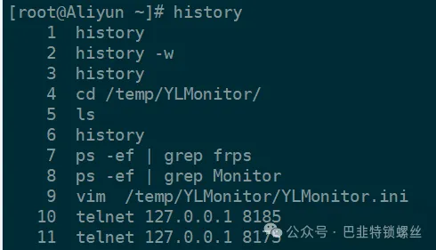

Linux清除history记录的方式【测试成功】
1. 清除当前用户会话的历史记录
history -c
export HISTSIZE=0
2. 删除指定行数的历史命令记录
history -d <行号>
例如：只保存最上面3条历史记录，其余全部删除
history | head -n 3 > ~/.bash_history # 保存最上面3条记录
history -c # 清除记录
history -r # 重新加载history记录

3. Bash历史记录文件和Bash会话历史
rm ~/.bash_history # 删除bash历史记录文件
history -c # 删除当前会话中历史记录
[root@Aliyun ~]# cat ~/.bash_history
history history
cd /temp/YLMonitor/ls
ps -ef | grep frps
ps -ef | grep Monitor
vim /temp/YLMonitor/YLMonitor.ini
telnet 127.0.0.1 8185
telnet 127.0.0.1 8175
docker ps
docker ps -a
free -m
ls

4. 手动删除历史记录文件
rm /home/用户名/.bash_history # 删除其他用户的历史记录